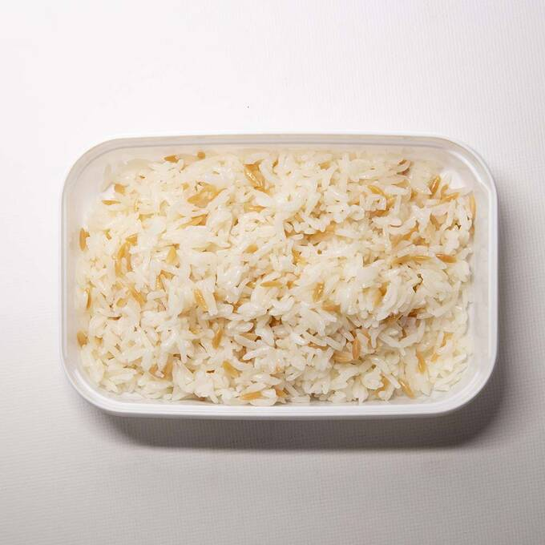

Pilav

Tarif
Temel besin kaynağı olarak sayılan pirincin ana vatanı Hindistan ve Çin'dir. Genellikle pilav yapımında kullanılan bu besinin; osmancık, baldo, siyah, esmer ve kırık pirinç gibi çeşitleri mevcuttur. Türkiye'de en çok kullanılan türü ise baldo pirincidir. Dünyanın birçok yerinde farklı çeşitlerle sunulan pirinç, pilavın ana malzemesi olarak bilinir. İran'da 'çilav', İtalya'da 'risotto' gibi isimlerle anılan pilav; sade, sebzeli ve etli olarak sunulabilir. Hazırsanız, ana yemeklerin tamamlayıcısı niteliğinde olan tane tane pirinç pilavı nasıl yapılır gelin birlikte görelim.
Malzemeler
- 1 su bardağı pirinç
- 1.5 su bardağı su
- 20 gr tereyağı
- Tuz
Adımlar
- Tarife başlamadan önce pirinçler ayıklanmalı ve suda bekletilmelidir. Bu sayede yumuşamaları sağlanır.
- Her pirinç cinsinin su çekme oranı birbirine göre farklı olduğu için öncelikle 1 su bardağı pirinç ölçüsüne 1.5 su bardağı su ekleyin. Pirinçlerin hafifçe diri kalması durumunda biraz daha su ekleyebilirsiniz.
- Pilav yapımında mutlaka tereyağı kullanın. Böylece yemeğinizin tane tane olmasını sağlayabilirsiniz.
- Pirincin rengini kaybetmemesi için, pişirme esnasında içerisine birkaç damla limon sıkın.
- Haşlama suyunun içerisine, et suyu veya tavuk bulyon koyarak aromasını arttırabilirsiniz.
- Pilavı hazırlarken tahta kaşık kullanın. Suyu ilave ettikten sonra tencerenin içerisine yayın ve kapağını aralık bir şekilde kapatın.
- Pişirme işlemi bitene kadar pirinci karıştırmamaya özen gösterin.